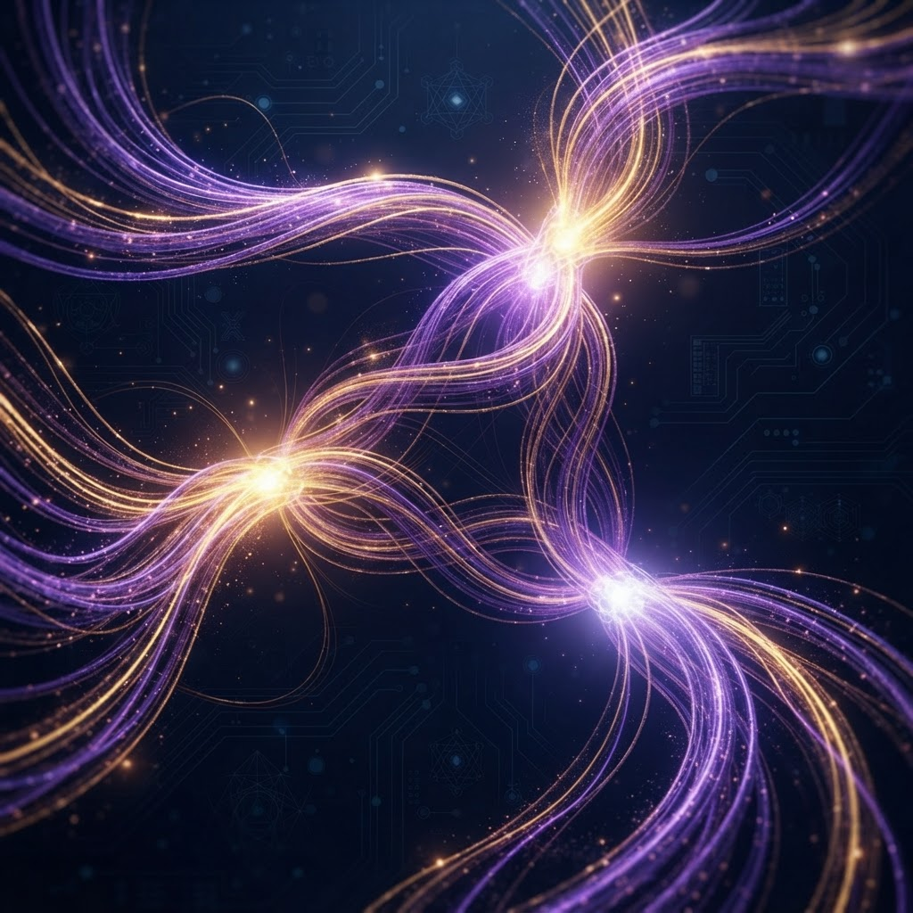
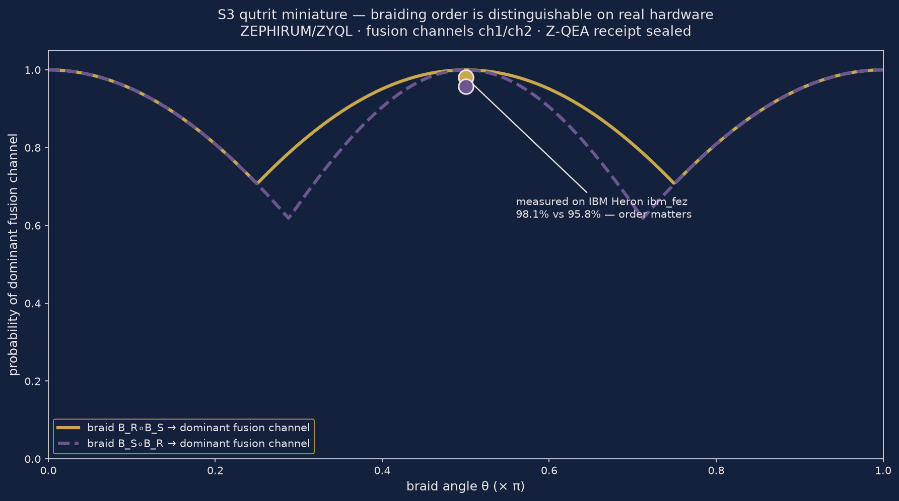

ZEPHIRUM v1.6.0: a ordem do trançado é distinguível no silício
A linguagem de programação quântica da casa — kernel statevector, transpilador OpenQASM 3 e núcleo de decisão ZYQL — acaba de ter seu primitivo topológico verificado em hardware real IBM Heron. Cada resultado abaixo carrega recibo selado (Z-QEA, SHA3-256) e job ID citável.

O que foi medido
Miniatura lógica do espaço de fusão S3: um par de ânions não-abelianos codifica um qutrit em dois qubits (três canais de fusão; o quarto estado é vedado). O experimento verificou que a ordem em que os trançados são aplicados altera o canal de fusão medido — a assinatura da não-abelianidade, coração da computação topológica.
No regime noiseless, os resultados batem com a teoria com desvio total 0 — em aritmética racional canônica (Fractions), sem decimais "de verdade inventada". A promessa do regime sem ruído foi entregue: 0 erros.
Os três canais de fusão medidos confirmam a dimensão-3 do espaço: distribuição exata 1/3 + 1/3 + 1/3 no statevector, canal proibido vedado. O qutrit do artigo que inspirou a série não é hardware exótico: é lógica codificada em emaranhamento.

Figura de dados reais: curvas teórica (ouro: BR∘BS; violeta: BS∘BR) e os pontos medidos no Heron. Varredura científica completa (sweep de ângulo, sweep de palavra de trançado, mapa de erros Pauli, teste χ²) em processamento no laboratório.
Honestidade declarada
Esta é uma miniatura lógica do primitivo fusão + trançado — não o duplo quântico S3 de 54 qubits do artigo original (Quantinuum H2 / Nature). Os jobs rodam no plano aberto IBM Quantum; a IBM é citada como laboratório de teste, sem endosso. Nada executa silenciosamente: simulações são rotuladas como simulações, e sem correção de erros, execuções úteis ficam bem abaixo de 20 qubits.
Prova noiseless: desvio 0 exato vs. teoria · não-comutatividade: norma L1 do comutador = 6 (exata) · bateria trivalente: 1/0/REFUSED com 1 chamada de oráculo, bound de Hoeffding declarado · jobs: dbbueufi0auc73dtp7og, dbbugbk24mrc73cif420 (ibm_fez) · recibo íntegro no repositório, selo 0277e09b78644a7193559b07f72590ec5705b11eeb7d4331a9e03962a4b30751.